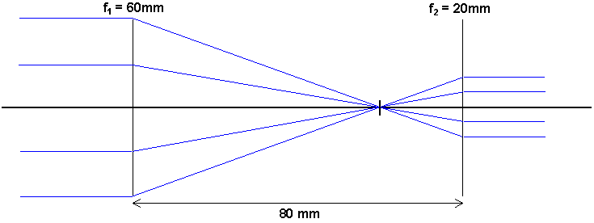
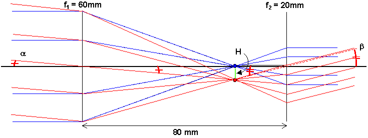
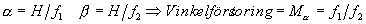
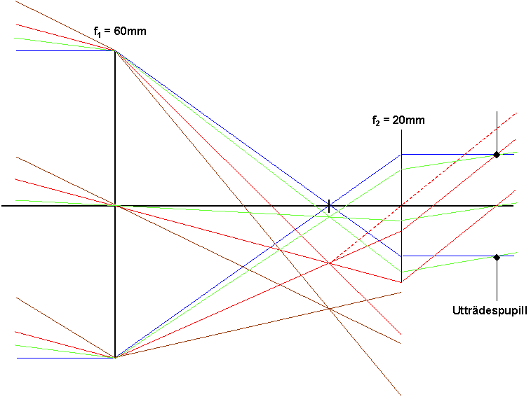
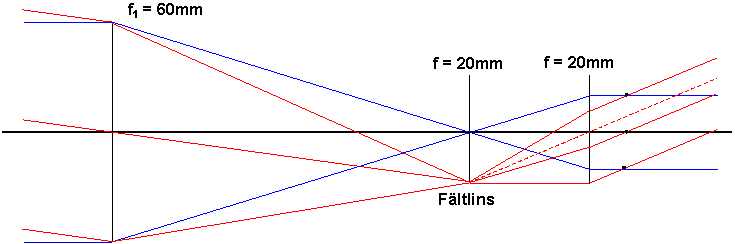

Kikaren och teleskopet
Frågar man ett barn vad en kikare är kommer ho/an ofelbart att säga att det är någonting som gör att det som ligger långt bort kommer närmre. Ur barnamun kommer emellertid inte alltid sanningen. Kikare och teleskop ändrar nämligen (oftast) inte alls på avståndet utan ökar bara den
synvinkel man har mellan två objekt (eller som ett objekt upptar)Ett objekt rakt fram
Vi bygger ett teleskop med 3 ggr förstoring (kundkretsen blir säkert inte så stor, men det blir tydligare figurer än med 10ggr förstoring)
Idén är att använda en svag lins först (objektiv) och en starkare en bit därefter (okular=eng. eyepiece). De ska placeras på ett avstånd som är summan av deras fokallängder. Vi väljer i vårt exempel 60mm, 20mm och alltså avstånd 80mm.
Om vi tittar på strålar som kommer in rakt framifrån, kommer de då att brytas ihop till den gemensamma
fokalpunkten. Därfrån in mot okularet beter de sig som gröna strålar (vi byter inte färg i fig) och går sedan ut parallellt med symmetriaxeln
Både objekt och bild ligger alltså i oändligheten. Den enda slutsats vi kan dra så här långt är att strålarna ligger tätare dvs att vi koncentrerat ljuset.
Hur mycket mer ljus får man in i ögat från en given stjärna med "teleskop" än utan?
Två objekt i vinkel
För att begripa detta med vinkelförstoringen tillgriper vi en röd stjärna belägen lite off-axis också. Alla strålar från den är parallella med varandra och samlas alltså i fokalplanet (dvs på fokallängds avstånd från objektivet), men inte i fokus. De går igenom denna punkt som kommer att bli mellanbild dvs fungera som objekt till okularet. Eftersom mellanbilden ligger i okularets fokalplan kommer alla strålar från den att ånyo bli parallella efter okularet. Vilken deras gemensamma riktning blir kan vi ta reda på genom att rita en hjälpstråle från mellanbilden genom mitten på okularet (går ju rakt igenom där).

Vi ser nu med ögonmått att vinkeln mellan stjärna röd och stjärna blå ökat tack vara kikaren.
Men om vi räknar?
Om a är synvinkel utan kikare och b synvinkel med kikare, och alla vinklar är små, så gäller

Ju större kvot mellan fokallängderna ju större förstoring alltså.
Ett litet problem har emellertid dykt upp:
Stjärna röd låg ju uppåt!
Efter instrumentet ser de ut att komma nerifrån!
Bilden är alltså upp och ner.
För att vända rätt den finns flera rättvändningssystem
(beskrivning i nivå 3) byggande på prismor eller speglar.Till
nästa kapitel (Begränsningar i optiska system)Till
innehållsförteckningenLjushantering i kikare (Nivå 2)
Om vi inför lite mer realism i figurerna inser vi att en stark lins (okularet) inte kan göras hur stor som helst (fokallängd=diameter brukar vara en gräns).
Vi ritar om figuren med samma linser , men med givna diametrar. Objektivet får diametern 40mm och okularet 20mm.
Så ritar vi in ljus från fyra stjärnor (blå, grön, röd och brun, i stigande vinkel). Alla stjärnor ger mellanbilder i det gemensamma fokus, men hur mycket ljus från var och en går igenom okularet?

Vi ser att blå och grön stjärna tar sig igenom helt och hållet.
Vad gäller stjärna röd kommer hälften av strålarna (de som ligger i övre halvan av objektivet) att hamna utanför okularet. Symtomet på detta är att den syns ljussvagare än den borde. Fenomenet kallas vinjettering och frånvaror av sådan (dvs att synfältet blir mörkare ut åt kanten) brukar anses som ett kvalitetsmått på optik. På grund av ögats förlåtande egenskaper brukar man anse att det är acceptabelt med vinjettering upp till den situation som beskrivs i fig, dvs hälften försvinner längst ut. För att hindra ytterligare försämring blockerar man helt enkelt det som ligger längre ut genom att placera en bricka med lagom stort hål i det gemensamma fokalplanet.
Stjärna brun (hur nu den ser ut??) ligger helt utanför synfältet.
Ett annat sätt att lösa problemet är att använda ett flerlinsigt system där Huygens okular (liknar modernare Ramsden och Erfl, men är mycket enklare att beskriva) får tjäna som exempel.
Innan vi ger oss i kast med detta ska vi titta på ytterligare en sak:
Var bör ögat placeras i förhållande till okularet?
Inte alldeles intill i vart fall! Där kommer en liten människopupill (dagsljus t.ex.) att göra så att inga röda strålar alls kommer in i ögat.
I det plan där fälten bäst överlappar varandra ligger det vi kallar utträdespupillen (exit pupil). Denna utgör bilden av den ljusbegränsande öppningen (=aperturen, i detta fall är objektivet apertur) i riktning mot bildrymden.
I vårt exempel hamnar den 26.7mm till höger om okularet och är 13mm i diameter. Allmännt blir dess diameter objektivdiametern / förstoringen (härledning ingår ej).
Den bör vara ungefär lika stor som ögats pupill vid nattseende om man inte ska slösa med ljus. Emellertid kan vi konstatera att 26.7mm är för mycket! Ingen vill hålla sin kikare på så stort avstånd (om den inte är ett kikarsikte, då man vill ha lite marginal för vapnets rekyl. Det är så smärtsamt annars) Även detta problem (och ett till som beskriv i nästa kapitel) löses av Huygens okular
Kikare med Huygens okular
Vi påminner först om
Huygens okular som består av två linser med lika fokallängd placerade på fokallängds avstånd från varandra. Huvudplanen låg då omlott och avstånden mellan FF och BF var bara lika med fsystOm vi sätter in ett sådan i ett teleskop kommer strålarna att se ut som i fig.

Eftersom FF ligger i den första linsen i okularet, ska denna (den första linsen) placeras i fokus till objektivet, dvs i vårt fall 60mm efter objektivet. Blå strålar påverkas inte alls av denna, medan de strålar som kommer från stjärna röd kommer att böjas av in mot symmetriaxeln. (Konstruktionen av dessa är lite knölig och ingår inte i kursen) Efter den andra linsen kommer de att vara inbördes parallella (som väntat). Den viktigaste skillnaden gentemot ett enlinsigt okular är att de röda strålarna skär de blå några mm efter sista okularlinsen (jfr med 26.7mm efter i enlinsfallet). Utträdespupillen kommer alltså att ligga mycket bättre till.
Räkna själv ut var den ligger och hur stor den är om objektivet är 40mm i diameter.
Lösning!Vidare finns det en fördel som har med synfältets utkanter att göra och en nackdel som har med själva linsens glasyta att göra.
Till
nästa sida (Mikroskopet)Till
nästa kapitel (Begränsningar i optiska system)Till
innehållsförteckningen